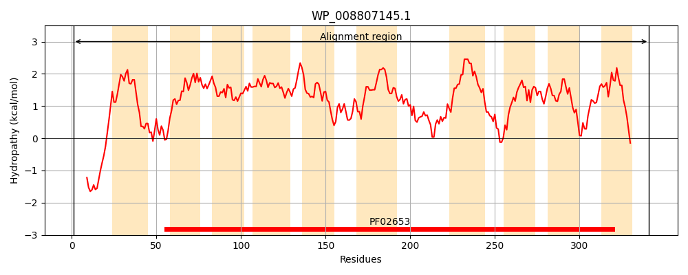
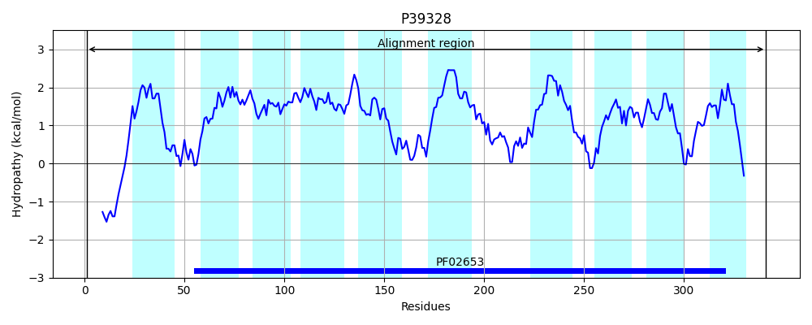
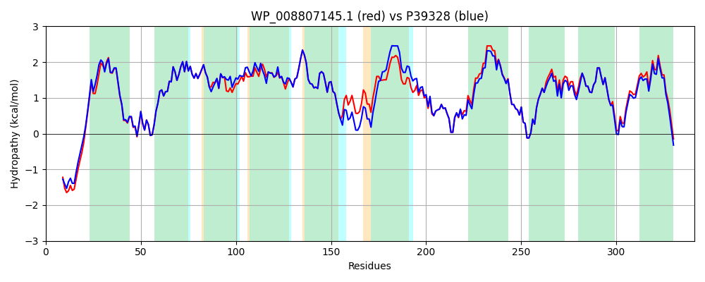

Hit Accession: P39328
Hit TCID: 3.A.1.2.25
Hit Description: gnl|BL_ORD_ID|10258 gnl|TC-DB|P39328|3.A.1.2.25 Inner membrane ABC transporter permease protein YtfT OS=Escherichia coli (strain K12) GN=ytfT PE=1 SV=1
Mach Len: 341
e:0.000000
Query TMS Count : 10
Hit TMS Count: 10
TMS-Overlap Score: 10.150000
Predicted Substrates:CHEBI:9840;UDP-sugar
BLAST Alignment:
Score: 1472 , Bit scores: 571 bits, E-value: 0.0e+00, Alignment length: 341, Percentage identity: 87
Query: 1 MMPRSLSQTGPEKRRFSWPKGTPQIIALLLVLLVDSLVAPHFYQVVLQDGRLFGSPIDILNRAAPVALLAIGMTLVIATGGIDLSVGAVMAIAGATAASMTVAGHSLAVVVLASLGAGALAGLWNGILVAILKIQPFVATLILMVAGRGVAQLITAGQIVTFDSPALAWLGSGSFLLFPTPVIIAAATLLLFWLFTRKTALGMFIEAVGINIRAAKNAGVNTRIVVMLAYVLSGVCAAIAGIIVAADIRGADANNAGLWLELDAILAVVIGGASLMGGRFNLLLSVVGALIIQGMNTGILLSGFPPELNQVVKAVVVLCVLIVQSPRFIGLLKGVRGHDKT 341
MMP+SL T KRRF WP G PQ++ALLLVLLVDSLVAPHF+QVVLQDGRLFGSPIDILNRAAPVALLAIGMTLVIATGGIDLSVGAVMAIAGAT A+MTVAG SL +V+L++LG G LAGLWNGILVAILKIQPFVATLILMVAGRGVAQLITAGQIVTF+SP L+W GSGS L PTPVIIA TL+LFWL TRKTALGMFIEAVGINIRAAKNAGVNTRI+VML YVLSG+CAAIAGIIVAADIRGADANNAGLWLELDAILAVVIGG SLMGGRFNLLLSVVGALIIQGMNTGILLSGFPPE+NQVVKAVVVLCVLIVQS RFI L+KGVR DKT
Sbjct: 1 MMPQSLPDTTTPKRRFRWPTGMPQLVALLLVLLVDSLVAPHFWQVVLQDGRLFGSPIDILNRAAPVALLAIGMTLVIATGGIDLSVGAVMAIAGATTAAMTVAGFSLPIVLLSALGTGILAGLWNGILVAILKIQPFVATLILMVAGRGVAQLITAGQIVTFNSPDLSWFGSGSLLFLPTPVIIAVLTLILFWLLTRKTALGMFIEAVGINIRAAKNAGVNTRIIVMLTYVLSGLCAAIAGIIVAADIRGADANNAGLWLELDAILAVVIGGGSLMGGRFNLLLSVVGALIIQGMNTGILLSGFPPEMNQVVKAVVVLCVLIVQSQRFISLIKGVRSRDKT 341 | Protein Hydropathy Plots: |
|---|
|  |  |
Pairwise Alignment-Hydropathy Plot:
|
|---|
|  |